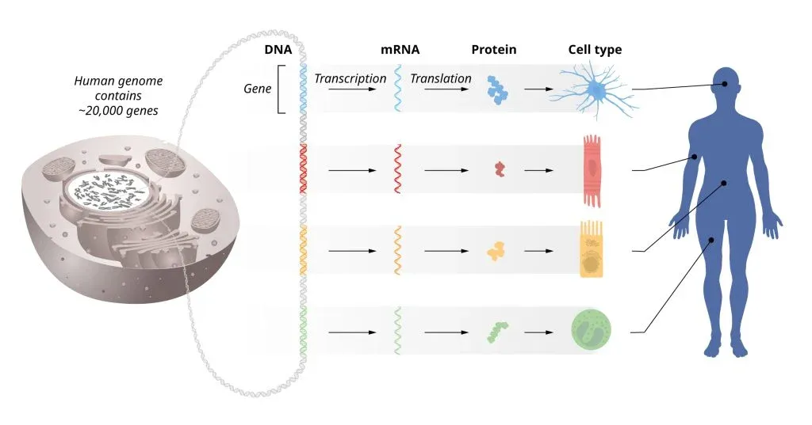
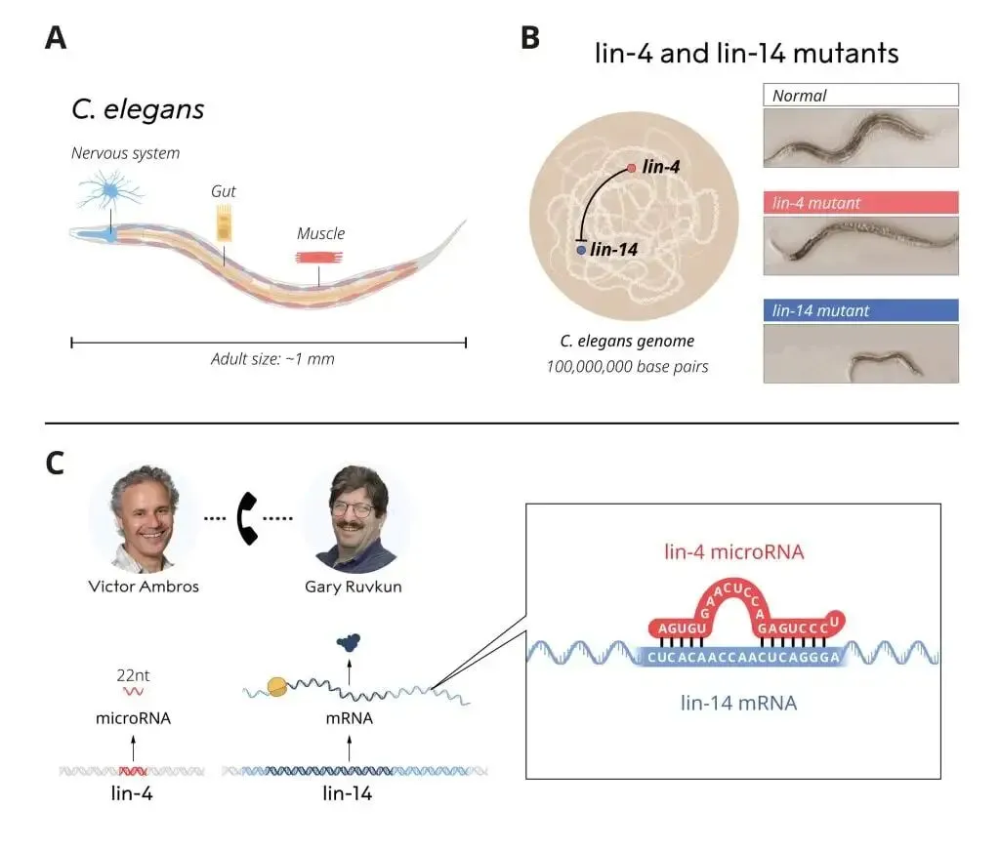

跨越三十年的《Cell》与《Nature》, 终成诺奖
原文：https://mp.weixin.qq.com/s?__biz=MzAwMzIzOTk5OQ==&mid=2247521896&idx=1&sn=c24bc785b5b6f05470376d96fca74586&chksm=9b3cef38ac4b662ef9e7d517fa525de8609f4dd1e1c5ece875d57a3e66388c3aeb05131dca3e#rd 合集：文献速递
一、撒花~
2024年的诺贝尔生理学或医学奖被授予Victor Ambros 与Gary Ruvkun ，获此殊荣主要是因为这两位科学家在基因调控 方面的研究贡献[1]。人体内的遗传信息主要储存在染色体中，体内的所有细胞几乎存储着完全相同的信息 ，但不同的细胞类型却拥有着不同的特征(这其实就是单细胞技术火热的原因)。这些特征由何而起？细胞们如何选择正确的基因集从而走向自己成熟的道路？Victor Ambros and Gary Ruvkun为了阐明这些细胞发育的问题，通过聚焦于microRNA 开创性地发现了包括人类在内的多细胞、多器官基因调控机制，为基因调控的研究提供了新视角。目前已发现的人类microRNA已经接近两千种 ，而有microRNA记载的物种也超过270种[2]。
二、震耳欲聋的沉默
直到二十世纪中页中心法则确立后，人们对遗传信息的认知才逐渐完善，那时科研界主要认为基因信息从DNA 流向mRNA ，再通过细胞体系生成蛋白质(图1)。只有选择正确的基因集表达，才能够让细胞特化为肌肉细胞、肠道细胞、神经细胞这类具有正常功能的细胞类型。毫无疑问，如果基因的调控脱离了正常的路线，则会引起肿瘤、糖尿病、自身免疫病等严重的疾病。在二十世纪60年代，人们发现转录因子作为特殊的蛋白质可以结合到DNA的特定区域中控制基因信息的传递并决定哪些mRNA被转录过程生成。自此，上千种转录因子被鉴定发现，人们也认为自己揭下了基因的调控过程的神秘面纱。但在20世纪80年代，Victor Ambros和Gary Ruvkun在Robert Horvitz(2002 年诺贝尔生理学或医学奖 得主之一，可谓名师出高徒)实验室完成博后工作的过程中，通过对两个基因突变品系(lin-4 gene、lin-14 gene)蠕虫的研究发现其存在发育缺陷(图2)，并且li-4基因存在与lin-14基因的负调控关系。此后，Victor Ambros在哈佛任职时发现突变的lin-4基因并不生成蛋白质，而是通过生成一种不寻常的小分子RNA 来抑制lin-14。与此同时，Gary Ruvkun在麻省总医院和哈佛医学院中也在继续着自己关于lin-14基因调控的研究。Ruvkun发现lin-4并没有抑制lin-14的mRNA生成，它们的调控关系似乎发生在转录事件之后 ，即关闭了lin-14蛋白质的产生。Ruvkun通过实验证明了lin-14的一段mRNA序列 是lin-4发挥抑制功能所必须的。于是这两位当今的诺奖获得着比较了彼此得研究，发现了lin-4与lin-14的"mRNA"(现在就只能称为转录产物啦)之间存在一段短的互补序列 ；即lin-4通过产生microRNA 结合了lin-14中的互补序列从而抑制其翻译过程 。上述伟大发现也在1993年被发表于《Cell》的两篇论文中[3,4]。这些结果发布后，在科学界几乎遇到了震耳欲聋的沉默(原话deafening silence，确实，这啥机制，以前从没见过啊)。即使这一结果非常有趣，但是早期大家也认为这种microRNA的调控是蠕虫所独有的，并不能适用于人类和其它复杂动物的研究中。但这一想法也随着Ruvkun发现了let-7 基因的microRNA后被打破——这一基因高度保守 并普遍存在于动物界中[5]。接下来的故事就你我皆知了：遇事不决，microRNA走起，这一调控机制被广泛应用于各物种的生物学研究中。

图1

图2
三、诺奖后遗症
现如今，我们对microRNA的认知不断扩充，一个microRNA往往能够调控多个基因的表达，一个基因的表达也可以被多个microRNA所控制。一个细胞组织或细胞的正常工作离不开microRNA的调控，其中复杂的调控网络也令人着迷。microRNA的一场调控已被发现于肿瘤、先天性听力损失、骨骼疾病等相关。Victor Ambros与Gary Ruvkun开辟了一个令人趋之若鹜的研究领域，诺奖的到来并不令人意外，只道是姗姗来迟 。可能一些同学在此次诺奖颁布后，才关注到microRNA这一研究领域，不过你觉得最晚的时候，恰恰是最早的时候。可以预见的是，microRNA这一昨日黄花，即将因为此次诺奖的颁布而重获指数级的热度。
参考：
[1]https://www.nobelprize.org/prizes/medicine/2024/press-release/[2]https://www.mirbase.org/[3]Lee RC, Feinbaum RL, Ambros V. The C. elegans heterochronic gene lin-4 encodes small RNAs with antisense complementarity to lin-14. Cell. 1993;75(5):843-854. doi:10.1016/0092-8674(93)90529-y[4]Wightman B, Ha I, Ruvkun G. Posttranscriptional regulation of the heterochronic gene lin-14 by lin-4 mediates temporal pattern formation in C. elegans. Cell. 1993;75(5):855-862. doi:10.1016/0092-8674(93)90530-4[5]Pasquinelli AE, Reinhart BJ, Slack F, Martindale MQ, Kurodak MI, Maller B, Hayward DC, Ball EE, Degnan B, Müller P, Spring J, Srinvasan A, Fishman M, Finnerty J, Corbo J, Levine M, Leahy P, Davidson E, Ruvkun G. Conservation of the sequence and temporal expression of let-7 heterochronic regulatory RNA. Nature. 2000;408(6808):86-89. 
如何联系我们

 公众号后台消息回复不便，这里给大家留一下领取资料及免费服务器(足够支持你完成硕博生涯的生信环境)的微信号 ，方便各位随时交流、提建议（别问在么，添加时直接说来意）。此外呼声一直很高的交流群 也建好了，欢迎大家入群讨论：
公众号后台消息回复不便，这里给大家留一下领取资料及免费服务器(足够支持你完成硕博生涯的生信环境)的微信号 ，方便各位随时交流、提建议（别问在么，添加时直接说来意）。此外呼声一直很高的交流群 也建好了，欢迎大家入群讨论：
大家可以阅读完这几篇之后添加给生信入门初学者的小贴士 如何搜索公众号过往发布内容

 您点的每个赞和在看，我都认真当成了喜欢
您点的每个赞和在看，我都认真当成了喜欢